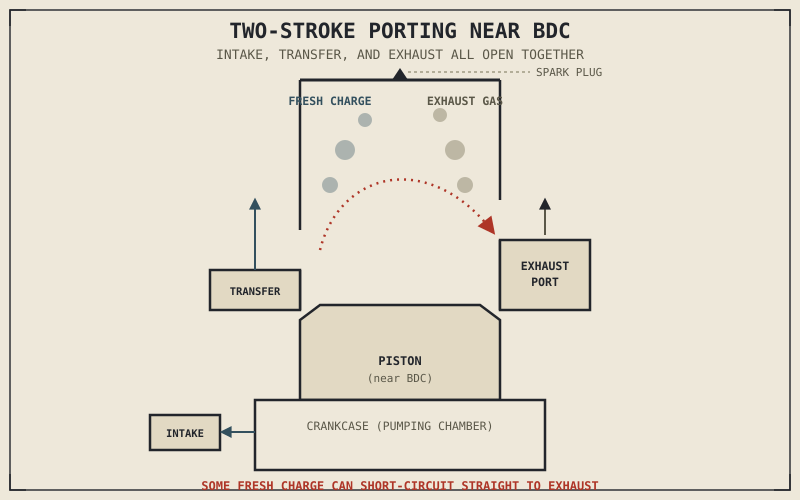

Every chapter in this part so far has quietly assumed one specific answer to a question this book never actually asked out loud: how many strokes does it take an engine to complete one full cycle? Chapter 2.2 built an entire chapter around the answer "four," and every subsequent chapter — valves, camshafts, torque curves, exhaust tuning — inherited that assumption without restating it. There is another answer, and it isn't a lesser or older version of the same idea. It's a genuinely different engineering trade, made at the highest possible level: the combustion cycle itself.
This chapter names the assumption Part II has been running on since Chapter 2.2, and gives the two-stroke alternative the direct comparison it deserves — not as a historical footnote, but as a different, coherent answer to the same problem this entire part has been solving.
One Revolution Instead of Two
Chapter 2.2 established that a four-stroke engine needs two full crankshaft revolutions — 720 degrees — to complete intake, compression, power, and exhaust as four separate, dedicated strokes. A two-stroke engine compresses that same set of jobs into a single crankshaft revolution, 360 degrees, by combining intake and compression into one upward piston stroke and combustion and exhaust into one downward stroke.
It manages this partly by giving up the dedicated valves Chapter 2.6 and Chapter 2.7 spent two full chapters explaining. Instead of camshaft-actuated valves, a two-stroke uses ports — openings cut directly into the cylinder wall — that the piston itself uncovers and covers simply by moving up and down. There's no camshaft, no valve springs, no valve float ceiling from Chapter 2.6 to worry about; the piston's own position is the entire timing mechanism, simpler by an enormous margin than everything covered in this part's top-end chapters, though also far less adjustable, since a port's position is fixed in metal rather than tunable the way camshaft duration was in Chapter 2.7.
The Scavenging Problem: Two Strokes' Real Cost
Chapter 2.7 described valve overlap in a four-stroke engine as a brief, carefully controlled window where intake and exhaust valves are both open near TDC. A two-stroke's intake and exhaust ports are open simultaneously for a much larger share of the cycle, by necessity — there's no separate stroke available to clear the cylinder of exhaust gas before the next charge arrives. Fresh intake mixture and outgoing exhaust gas are genuinely present in the cylinder together, and without extremely careful port shaping to direct the incoming charge's flow, some of that fresh mixture — including its fuel — can escape straight out the exhaust port before it's ever burned.
This is a real efficiency loss with no clean four-stroke equivalent, and it's the direct cause of two-strokes' historical reputation for smokier exhaust and comparatively poor fuel efficiency. Engineers manage it through careful transfer port geometry that shapes how the incoming charge flows through the cylinder, and some higher-performance two-strokes add a power valve that adjusts exhaust port timing somewhat, but the fundamental problem — no dedicated stroke exists to fully separate old gas from new — is baked into the two-stroke cycle itself, not a solvable engineering oversight.
A four-stroke spends two full strokes just clearing out and refilling the cylinder properly. A two-stroke does both jobs at once, in less time, and the fuel lost out the exhaust port is the direct price of that speed.

A two-stroke cylinder shown with intake, transfer, and exhaust ports simultaneously exposed by the piston near BDC, with fresh charge and exhaust gas both present in the chamber at once.
Why Two-Strokes Were Genuinely Excellent at Power-to-Weight
The trade-off runs strongly the other way, too. A two-stroke fires once every single crankshaft revolution, rather than once every two revolutions the way Chapter 2.10 described a four-stroke doing — for the same displacement and RPM, that's roughly double the power pulses per minute. Combined with the complete absence of the valvetrain Chapter 2.6 and Chapter 2.7 devoted two chapters to, a two-stroke engine is dramatically simpler, lighter, and cheaper to manufacture than a four-stroke of comparable output, with a genuinely excellent power-to-weight ratio that made it the dominant choice for decades in small-displacement performance and off-road applications, where that ratio mattered more than fuel efficiency or emissions.
Oil, Smoke, and the Real Reason Two-Strokes Retreated
A two-stroke's crankcase can't hold the wet sump of oil Chapter 2.16 described, because the crankcase itself is doing double duty as a pumping chamber for the incoming air-fuel charge. Instead, oil is typically mixed directly into the fuel or injected separately into the intake charge, lubricating the engine's internals as it passes through — and that oil then burns alongside the fuel in the combustion chamber, which is the direct cause of a two-stroke's characteristic exhaust smoke and its comparatively high output of unburned hydrocarbons.
This is where Chapter 2.13's honest point about fuel injection's regulatory origins comes back around with real consequences. The same tightening emissions standards that pushed carburetors toward fuel injection made a conventional two-stroke's combination of scavenging losses and burned lubricating oil essentially impossible to meet without exotic, expensive solutions like direct fuel injection, which largely priced two-strokes out of mainstream street motorcycles even though nothing about their core engineering had gotten worse. It's worth stating plainly: two-strokes didn't lose to four-strokes on pure engineering merit. They lost to a regulatory environment that specifically penalized the trade-off two-strokes had always made.
A Common Misconception, Cleared Up Early
It's tempting to read the two-stroke's retreat from street motorcycles as proof that four-stroke is simply the more advanced, superior technology, and two-stroke a primitive stage the industry has since evolved past. That framing misreads what actually happened. Two-stroke and four-stroke are different answers to the same problem, each with real, specific costs and benefits, not two points on a single line of progress — and in applications where two-stroke's trade-offs are still genuine wins and emissions regulation isn't the binding constraint, from certain outboard motors to small handheld equipment, the two-stroke cycle remains a perfectly rational, sometimes preferred choice. This is the same trade-off pattern that's run through nearly every chapter in this part, applied here at its highest level: the choice of combustion cycle itself, not just a parameter within one.
Where This Leads
Nearly every chapter in this part has referenced efficiency in passing — combustion efficiency in Chapter 2.9, volumetric efficiency in Chapter 2.3, thermal losses to cooling in Chapter 2.15 — without ever laying out, in one place, exactly where a tank of fuel's energy actually ends up. Chapter 2.19 finally does that accounting directly, tracing fuel energy from the tank through combustion to the crankshaft and beyond.
Key Concepts to Remember
- A two-stroke engine completes intake, compression, combustion, and exhaust in a single crankshaft revolution, using piston-controlled ports instead of the camshaft-actuated valves Chapters 2.6 and 2.7 described.
- Two-strokes lack a dedicated stroke to fully clear exhaust gas before the next charge arrives, causing genuine scavenging losses where unburned fuel can escape out the exhaust port.
- Firing once per revolution instead of once every two, combined with no valvetrain at all, gives two-strokes a genuinely excellent power-to-weight ratio compared to a four-stroke of similar displacement.
- Two-stroke lubrication burns oil alongside fuel, since the crankcase is used for charge pumping rather than holding the wet sump Chapter 2.16 described, directly causing characteristic smoke and higher unburned hydrocarbon emissions.
- Two-strokes retreated from mainstream street use primarily due to emissions regulation, not because their core engineering became inferior to four-stroke design — a trade-off, not a technological defeat.
Cross-References
| ← Ch. 2.2 | Established the four-stroke cycle this chapter finally contrasts directly against its two-stroke alternative. |
| ← Ch. 2.6–2.7 | Covered the valvetrain a two-stroke eliminates entirely in favour of piston-controlled ports. |
| ← Ch. 2.13 | Established the regulatory pressures driving fuel injection adoption; this chapter shows those same pressures directly explain the two-stroke's retreat from street motorcycles. |
| ← Ch. 2.16 | Described wet-sump lubrication; this chapter explains why two-strokes cannot use that same approach and what they do instead. |
| → Ch. 2.19 | Finally accounts for exactly where a fuel tank's stored energy goes, drawing together the efficiency threads this part has referenced throughout. |